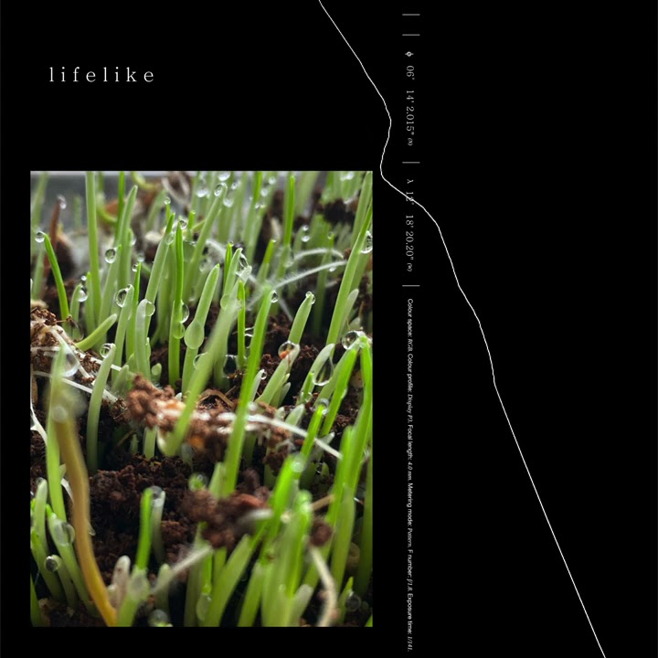

MOMENTS

INSIDE NURTURE

likelife
1:35
look at the sky
5:10
get your wish
3:39
wind tempos
6:04

lifelike
I wanted to start off the album with the simplest and most fundamental possible sounds, which is that “sample pop” and then the sound of the piano.there's this idea of a "window' or a "portal" that appears a lot in the nurture art... I think of lifelike as kind of serving that purpose on the album. a little portal into the worldview.